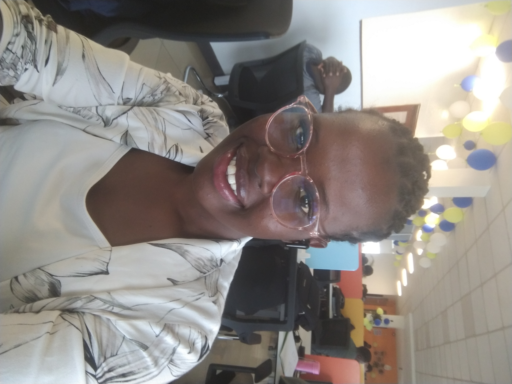

This is TafSIRI!
About
The
TafSIRI
Initiative
the digital baraza
The TafSIRI initiative is a civic educational/advocacy, interactive website, with a user-friendly interface to encourage public action.
It encourages impactful, inclusive and people-oriented Urban Development.

About TafSIRI
the background
Public participation is one of the principles of good governance, according to the 2010 Kenyan Constitution. However the approach currently employed for the process is failing, resulting in public markets, streets and schools etc with very poor user-experience.
Several discussions on Urban governance allude to public engagement as the key to inclusive and sustainable urban development. We arge that is not enough to ask whether it has been done. Its quality has to come to question as well.
the problem
Inaccessible or incomprehensive information on infrastructure projects leads to poor engagement which leads to ineffective public participation. Often this challenge is caused by difficulties in accessing proposed plans. The majority of the public are often uninvited to the discussion forum.
Even when the drawings are provided, there is a challenge in understanding the proposed complex technical Architectural/Engineering plans and specifications, by the majority of the population. While the presentations in the forums are expertly done, to the untrained eyes and minds, it is just garble.
the solution
The initiative will solicit Architectural/Engineering plans and specifications from government offices and Public Works Departments. Leveraging heavily on Architectural visualization through Computer-Aided Design, we will avail the visually-interpreted photorealistic renders to the public via the website.
The feedback on individual projects will then consolidated and presented at the relevant offices within the National and County governments' structure on behalf of the people. These institutions will be promptly encouraged to constantly provide updates on the decisions made with regards to the feedback collected from the public.
The TafSIRI team
Teamwork makes the dream work, or so they say!
Are you a young person who wants to make a lasting impact?
Contribute your skills to better your community.
Meet the TafSIRI core Team
 |
 |
Steffanie Chepkirui |
Fiona Nyadero |
Partnerships
We are always on the look out for partners to collaborate together towards meaningful public engagements.
If this is you, kindly write to us, at tafsiri@gmail.com, expressing your interest!
We would love to hear from you, Partner!